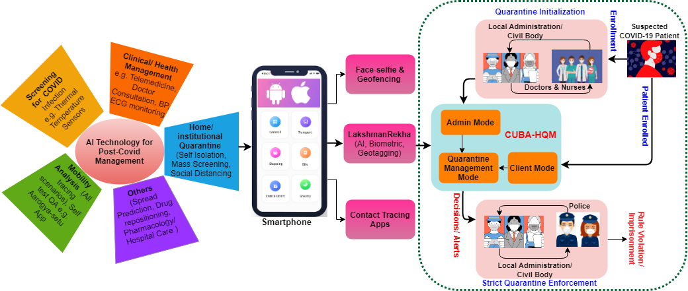
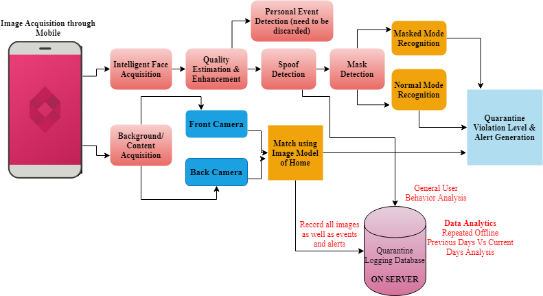

LakshmanRekha: AI-biometric driven home quarantine management application using mobile based continuous authentication and geofencing
Project Sumarry
LakshmanRekha is a research project funded by the Department of Science & Technology (DST) under the program “RAKSHAK- Remedial Action, Knowledge Skimming and Holistic Analysis of COVID-19”. LakshmanRekha focuses on continuous tracking and identity verification at home quarantine by providing continuous user biometric authentication (CUBA) augmented with geofencing using AI based Post-COVID HQM solution. The prototype is useful to both the government (local administration/ civil body) and patients who are being offered to stay in home or institutionalised quarantine. LakshmanRekha guarantees to locate the geofenced area and is capable to continuously monitor and accurately detect the identity of a quarantined person so that no quarantined user can breach the geo-fence. It will be mandatory for people under quarantine to download and install the application on their mobile phones (which can be ensured by local authorities).
Motivation
In the Post-COVID world, Governments all across the world are providing guidance on basic precautionary measures such as living in quarantine and maintaining social distance for suspected people who have early symptoms of coronavirus illness. Considering the fact that we don't know much about the disease and its rapid spread in society, now it has become crucial to continuously monitor and track the movements of every person with symptoms of coronavirus as well as trace their contact profile. In order to ensure that the individuals who are required to be in self/home isolation are obeying the necessary instructions, very limited online procedures have been deployed yet. Therefore, considering the seriousness of the prevailing epidemic, we propose LakshmanRekha a multi-biometrics based continuous authentication solution using the latest AI techniques, to control and monitor the individual move in/out of the quarantine zone using smartphones. It will be mandatory for people under quarantine to download the application on their mobile phones (which can be ensured by local authorities) and any unauthorized movement will be notified to the local administration (police or health department). Research Topics
- Development of multimodal biometric technologies for identifying people on-the-move through Continuous User Authentication, an end to end deep learning framework by aggregating physiological (face, periocular, ear) characteristics of an individual.
- Development of AI and Deep Learning algorithms for presentation or replay attacks, spoofing, template security, and personal event deletion.
- Development of AI and Deep Learning algorithms for gender and face mask detection modules. Image level home modeling to extend location matching at room level.
- Validation on a huge number of patients and tuning the performance versus convenience tradeoff.
- Quarantine log data analytics to evaluate user behaviour.
- Development of Smartphone Android application.
Keywords:
- Quarantine Management
- Continuous Biometric Authentication
- Geofencing
- Artificial Intelligence
- Android Plateform